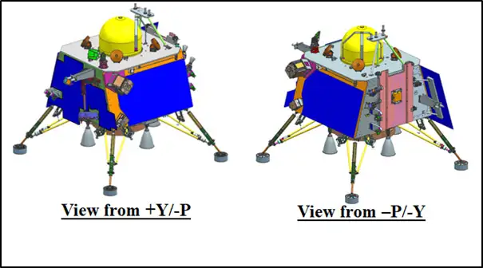
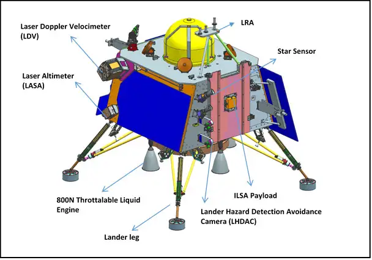

About Chandrayaan 3 Mission
Chandrayaan-3 is a follow-on mission to Chandrayaan-2 to demonstrate end-to-end capability in safe landing and roving on the lunar surface. It consists of Lander and Rover configuration. It will be launched by LVM3 from SDSC SHAR, Sriharikota. The propulsion module will carry the lander and rover configuration till 100 km lunar orbit. The propulsion module has Spectro-polarimetry of Habitable Planet Earth (SHAPE) payload to study the spectral and Polari metric measurements of Earth from the lunar orbit.
Lander payloads:
Chandra’s Surface Thermophysical Experiment (ChaSTE) to measure the thermal conductivity and temperature; Instrument for Lunar Seismic Activity (ILSA) for measuring the seismicity around the landing site; Langmuir Probe (LP) to estimate the plasma density and its variations. A passive Laser Retroreflector Array from NASA is accommodated for lunar laser ranging studies.
Rover payloads:
Alpha Particle X-ray Spectrometer (APXS) and Laser Induced Breakdown Spectroscope (LIBS) for deriving the elemental composition in the vicinity of landing site.
Chandrayaan-3 consists of an indigenous Lander module (LM), Propulsion module (PM) and a Rover with an objective of developing and demonstrating new technologies required for Inter planetary missions. The Lander will have the capability to soft land at a specified lunar site and deploy the Rover which will carry out in-situ chemical analysis of the lunar surface during the course of its mobility. The Lander and the Rover have scientific payloads to carry out experiments on the lunar surface. The main function of PM is to carry the LM from launch vehicle injection till final lunar 100 km circular polar orbit and separate the LM from PM. Apart from this, the Propulsion Module also has one scientific payload as a value addition which will be operated post separation of Lander Module. The launcher identified for Chandrayaan-3 is LVM3 M4 which will place the integrated module in an Elliptic Parking Orbit (EPO) of size ~170 x 36500 km.
The mission objectives of Chandrayaan-3 are:
- To demonstrate Safe and Soft Landing on Lunar Surface
- To demonstrate Rover roving on the moon and
- To conduct in-situ scientific experiments.
To achieve the mission objectives, several advanced technologies are present in Lander such as,
- Altimeters: Laser & RF based Altimeters
- Velocimeters: Laser Doppler Velocimeter & Lander Horizontal Velocity Camera
- Inertial Measurement: Laser Gyro based Inertial referencing and Accelerometer package
- Propulsion System: 800N Throttleable Liquid Engines, 58N attitude thrusters & Throttleable Engine Control Electronics
- Navigation, Guidance & Control (NGC): Powered Descent Trajectory design and associate software elements
- Hazard Detection and Avoidance: Lander Hazard Detection & Avoidance Camera and Processing Algorithm
- Landing Leg Mechanism.
To demonstrate the above said advanced technologies in earth condition, several Lander special tests have been planned and carried out successfully viz.
- Integrated Cold Test - For the demonstration of Integrated Sensors & Navigation performance test using helicopter as test platform
- Integrated Hot test – For the demonstration of closed loop performance test with sensors, actuators and NGC using Tower crane as test platform
- Lander Leg mechanism performance test on a lunar simulant test bed simulating different touch down conditions.
The overall specifications for Chandrayaan-3 is provided below:
| Sl No. | Parameter | Specifications |
|---|---|---|
| 1 | Mission Life (Lander & Rover) | One lunar day (~14 Earth days) |
| 2 | Landing Site (Prime) | 4 km x 2.4 km 69.367621 S, 32.348126 E |
| 3 | Science Payloads |
Lander:
|
| 4 | Two Module Configuration |
|
| 5 | Mass |
|
| 6 | Power generation |
|
| 6 | Communication |
|
| 8 | Lander Sensors |
|
| 9 | Lander Actuators | Reaction wheels – 4 nos (10 Nms & 0.1 Nm) |
| 10 | Lander Propulsion System | Bi-Propellant Propulsion System (MMH + MON3), 4 nos. of 800 N Throttleable engines & 8 nos. of 58 N; Throttleable Engine Control Electronics |
| 11 | Lander Mechanisms |
|
| 12 | Lander Touchdown specifications |
|
Three dimensional views of Chandrayaan-3 modules are provided below:

Chandrayaan-3 Elements

Chandrayaan-3 – Integrated Module

Chandrayaan-3 Integrated Module - Views
Chandrayaan-3 Lander Module -Views

Chandrayaan-3 Propulsion Module - Views

Chandrayaan-3 Rover on Ramp and Deployed Views

Chandrayaan-3 Rover -Views

Chandrayaan-3 Lander
Chandrayaan-3 Lander

Chandrayaan-3 Propulsion Module

Chandrayaan-3 Rover